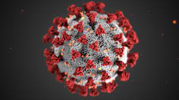

| CORONAVIRUS COVID-19 |
|  |
| ¿Qué hago si tengo síntomas? |
| Estamos intentando comunicarnos con todos los casos positivos, pero hay tantos casos que no podemos comunicarnos con todos dentro de 24 horas. Los empleados de salud pública que llaman usan teléfonos celulares del trabajo. Si dejan un mensaje con un número desconocido del Condado de Washington, por favor regrese la llamada al número que dejen en el mensaje. Ellos pueden proveerle un numero para confirmar que no es una estafa. Si la prueba fue positive, por favor avíseles a sus contactos que han sido expuesto a el COVID-19. No se espere que le llamen de salud pública. Un contacto cercano es alguien con quien haya estado a una distancia de seis pies (dos metros) por un mínimo de 15 minutos dentro de un periodo de 24 horas, con o sin mascarilla. Si tiene, o haya tenido síntomas, comuníquese con personas de contacto cercano desde dos días antes de que empezaron los síntomas. Si NO tiene y NO tuvo síntomas, comuníquese con personas de contacto cercano los dos días antes de hacerse la prueba. Los contactos cercanos deben guardar cuarentena en casa y consultar con un médico para decidir si necesitan hacerse la prueba o no. Para más información vea la página de rastreo de contacto. |
| ¿Cuándo se comunicarán conmigo de salud pública? |
| Estamos intentando comunicarnos con todos los casos positivos, pero hay tantos casos que no podemos comunicarnos con todos dentro de 24 horas. Los empleados de salud pública que llaman usan teléfonos celulares del trabajo. Si dejan un mensaje con un número desconocido del Condado de Washington, por favor regrese la llamada al número que dejen en el mensaje. Ellos pueden proveerle un numero para confirmar que no es una estafa. |
| Si la prueba fue positive, por favor avíseles a sus contactos que han sido expuesto a el COVID-19. No se espere que le llamen de salud pública. |
|
| ¿Cómo puede protegerme a si mismo y a otros? | \
|
| Mas informacion |
|
Informacion.html vacuna del covid.html |